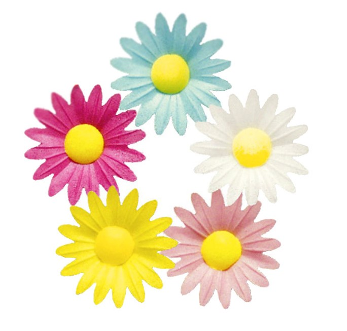

Вафельные фигурки применяются для декоративной отделки кондитерских изделий.
Они украсят не только большие торты, но и небольшие куличи,
капкейки, пирожные, печенье и другие десерты.
Эти качественные украшения помогут сэкономить время изготовления и себестоимость десерта.
Вафельные фигурки изготовлены из пищевых ингредиентов на
крахмальной основе и могут быть использованы для непосредственного
употребления в пищу. Могут подвергаться глубокой заморозке.
Состав: кукурузный крахмал, модифицированный картофельный крахмал, молоко сухое, сахар, глюкозный сироп, гуммиарабик, пектин, соевый лецитин, лимонная кислота, пищевые красители.
Размеры: диаметр основания – 45 мм.
В упаковке 200 штук.
Условия хранения: хранить вдали от источников тепла и солнечных лучей.
Все права защищены.